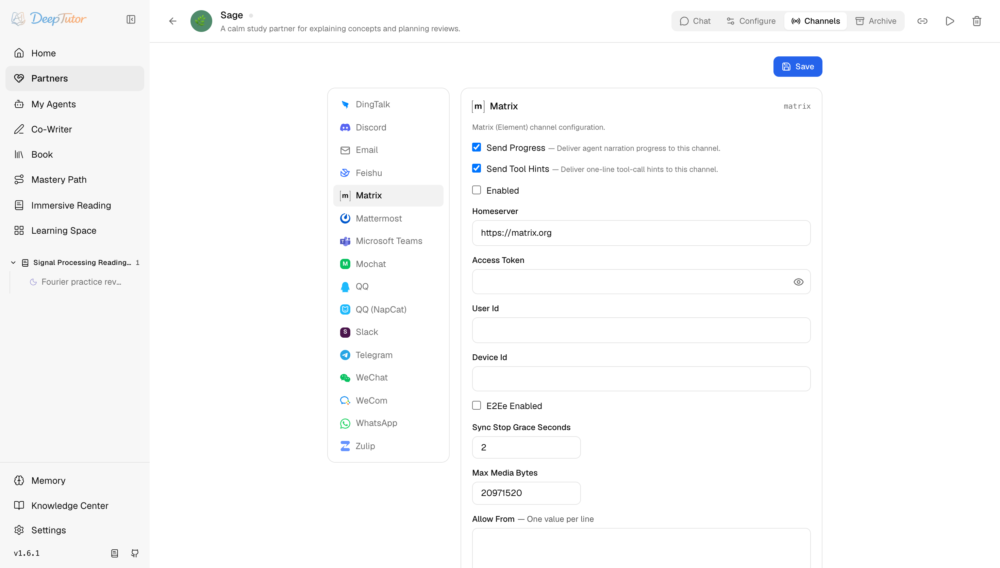

夥伴與管道Matrix
DeepTutor 接入 Matrix 教學！任意 homeserver 都能連，端對端加密可選，2 套安裝套件千萬別裝錯！｜零度解說
為 Partner 設定 Matrix channel——任意 homeserver、long-poll sync、可選端對端加密。
原文連結：https://docs.deeptutor.info/zh-cn/partners/matrix/
喜歡去中心化聊天方案的朋友看過來，DeepTutor 對 Matrix 的支援相當完整。
matrix 管道透過標準 client-server API 把 AI 學習夥伴（Partner）接入去中心化的 Matrix 房間。任何 homeserver（Matrix 伺服器）都行（matrix.org，或自建的 Synapse / Conduit / Dendrite），端對端加密（E2EE）是可選項，多數安裝不必為 libolm 依賴買單，這點很省心。

Partner 執行起來之後，先看卡片的即時狀態：它會在查日誌前區分同步迴圈（sync loop）已連線、缺少 Matrix 依賴或設定不完整這幾種情況。
一、安裝依賴
但是問題來了：Matrix 不在 Partners 可選元件（extras）裡，它自帶兩個獨立的 extras，千萬別裝錯：
# plain Matrix (unencrypted rooms)
pip install -e ".[matrix]"
# Matrix including end-to-end encrypted rooms
pip install -e ".[matrix-e2e]"[matrix]安裝matrix-nio、mistune和nh3。直聊和未加密房間用這個就夠了。[matrix-e2e]額外加上matrix-nio[e2e]，它會拉取python-olm，而後者需要先裝好原生的 libolm 庫：
# macOS
brew install libolm
# Debian / Ubuntu
sudo apt-get install libolm-devDocker（容器部署工具）/CI 等沒有原始碼 checkout（原始碼目錄）的場景，同樣的依賴集合也同步列在 requirements/matrix.txt 和 requirements/matrix-e2e.txt。
完全不裝 extras 的話，管道會在 import 時直接報 Matrix dependencies not installed。
二、建立 bot 帳號並獲取 access token
Partner 需要一個自己的 Matrix 帳號，任何 homeserver 都行，測試用 matrix.org 就可以。
- 建立帳號：Element web app -> 你的 homeserver -> Create Account（自建 Synapse 也可以用
register_new_matrix_user）。 - 獲取存取權杖（access token），兩種方式任選：
- Element ：用 bot 帳號登入， Settings -> Help & About -> Advanced -> Access Token ，展開並複製。
- REST API ：直接用命令列呼叫登入 API：
curl -X POST https://matrix.org/_matrix/client/r0/login \
-H "Content-Type: application/json" \
-d '{"type": "m.login.password", "user": "my-bot", "password": "your-password"}'
# the response contains "access_token": "syt_..."三、設定管道卡片（channel card）
開啟 Partners -> 你的 partner -> Channels -> Matrix。
| 欄位 | 怎麼填 |
|---|---|
| Send Progress | 測試時建議開啟。長任務會把過程解說（narration）發到房間裡。 |
| Send Tool Hints | 除錯時建議開啟；不想讓使用者看到一行工具呼叫就關掉。 |
| Enabled | 準備啟動管道時再開啟。 |
| Homeserver | 預設 https://matrix.org 。自建就填自己伺服器的 URL。 |
| Access Token | 從 Element 或 login API 拿到的 token。以 secret 方式儲存。 |
| User Id | bot 的完整 Matrix id，如 @my-bot:matrix.org 。也用於識別 @ 提及。 |
| Device Id | 可選但建議填：隨便選一個穩定的字串並保持不變。留空的話，重新啟動可能會重放最近的訊息。 |
| E2Ee Enabled | 裝好 [matrix-e2e] extra 和 libolm 之後再開啟。沒裝的話 bot 解不開加密房間。 |
| Sync Stop Grace Seconds | 預設 2 。關停時給進行中的 sync 多少秒收尾。基本不用改。 |
| Max Media Bytes | 預設 20971520 （20 MB）。附件上傳/下載的大小上限。 |
| Allow From | 一行一個 Matrix user id，如 @frank:matrix.org 。測試可填 * 表示開放。空列表拒絕所有人——包括房間邀請。 |
| Group Policy | 多人房間的策略： open （預設）回覆所有訊息， mention 只在 bot 被 @ 時回覆， allowlist（白名單） 只回復下面列出的房間。1:1 直聊總是會回覆。 |
| Group Allow From | 房間 id（ !abc123:matrix.org ），一行一個。只在 allowlist 策略下生效。 |
| Allow Room Mentions | 在 mention 策略下， @room 群發提醒算不算提及 bot。預設關閉。 |
四、儲存之後
- 點 Save ，開啟 Enabled ，再儲存一次。
- 啟動 partner：從網頁介面，或
deeptutor partner start <partner-id>。已在執行就重新啟動。 - 在任意 Matrix 使用者端邀請 bot：
/invite @my-bot:matrix.org。bot 只接受能通過 Allow From 的人發出的邀請，列表為空時它永遠不會進房。 - 在房間裡發一條短訊息，看回復。
- 跑通之後，把 Allow From 裡的
*換成真實 user id。
回覆裡的 Markdown 會渲染成 Matrix HTML，所以表格和程式碼塊在 Element 等使用者端裡都能正常顯示。
如何確認健康
健康的 Matrix 管道通常有三個跡象：
- 日誌顯示 sync loop 在跑，沒有反覆出現的 sync 錯誤；
- 允許的傳送者發出邀請後，bot 幾秒內就進房；
- 在房間裡發一條短訊息，Partner 能正常回復。
注意隱私邊界：E2EE 保護的是 Matrix 使用者端到 bot 之間的傳輸，訊息正文仍然會以明文到達你設定的大語言模型（LLM）服務商。在意這一點的話，給這個管道配本機模型。
常見問題
bot 進了加密房間但從不回覆
E2Ee Enabled 開了但沒裝 [matrix-e2e] extra（或 libolm），或者房間加密了它卻是關的。先裝 libolm，再 pip install -e ".[matrix-e2e]"，開啟開關，重新啟動 partner。
M_UNKNOWN_TOKEN
access token 失效了，通常是 bot 在別的使用者端被登出，或伺服器端重置。透過 Element 或 login API 重新拿一個 token，更新到卡片上。
第一次 sync 特別慢
歷史很長的帳號初次 sync 批次很大；這是正常的，每個 device 只會發生一次。設定一個穩定的 Device Id，之後重新啟動就能增量續傳，不用從頭來過。
bot 不理我的邀請
邀請人必須能通過 Allow From。把你自己的 Matrix user id 加進去（測試期間也可以用 *），儲存後重新邀請。
實際效果還會受到模型、提示詞以及具體使用場景的影響，建議大家結合自己的需求實際體驗評估。